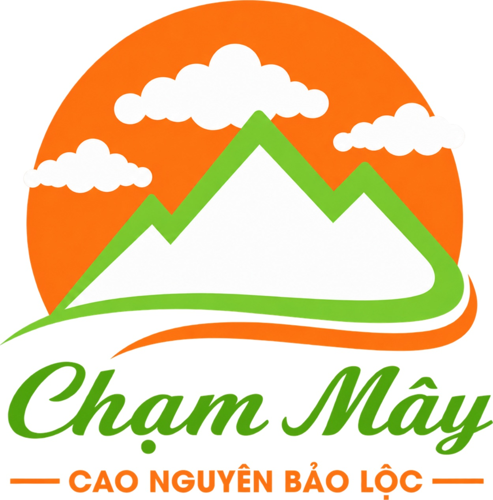

Trà Bảo Lộc
Bảo Lộc là vùng sản xuất và chế biến trà có tiếng. Khi chọn mua, nên xem nguồn gốc, thành phần, ngày đóng gói và hướng dẫn bảo quản.

CHẠM MÂYBẢO LỘC · LÂM ĐỒNGCẨM NANG CHẠM MÂY · BẢO LỘC
Tìm hiểu trà Bảo Lộc, cà phê và gợi ý chọn đặc sản, quà mang về khi du lịch Bảo Lộc, Lâm Đồng.
Bảo Lộc là vùng sản xuất và chế biến trà có tiếng. Khi chọn mua, nên xem nguồn gốc, thành phần, ngày đóng gói và hướng dẫn bảo quản.
Thử các phong cách pha chế tại quán địa phương, từ cà phê phin đến các món hiện đại. Hỏi rõ loại hạt và mức rang nếu muốn mua làm quà.
Dạo quanh chợ và hàng quán để khám phá món ăn theo mùa. Ưu tiên nơi có thông tin rõ ràng về giá, vệ sinh và giờ phục vụ.
Trà đóng gói và các sản phẩm địa phương có nhãn mác rõ ràng thường tiện mang theo. Nên kiểm tra hạn sử dụng và cách bảo quản trước khi mua.
Đang lên kế hoạch ghé Bảo Lộc? Xem vị trí Chạm Mây hoặc tiếp tục khám phá các bài viết khác.
Chạm Mây trên Google Maps ↗Xem các cẩm nang khác ↗